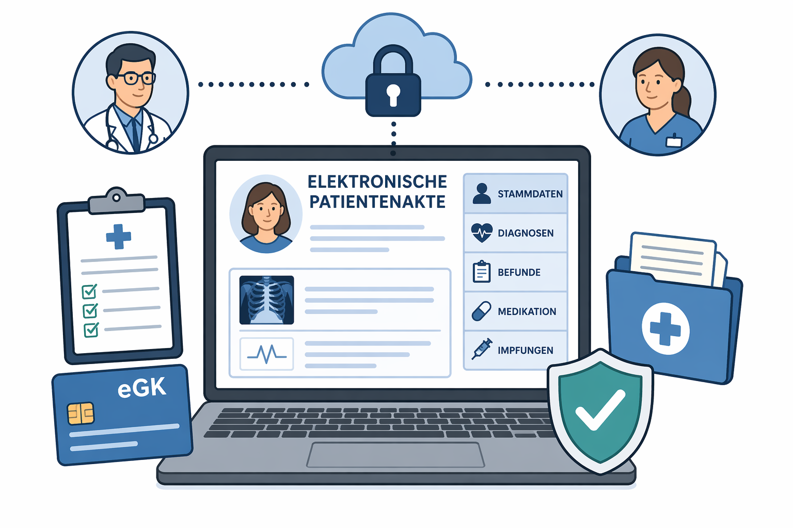

Die elektronische Patientenakte – und ich habe gar kein Smartphone

Seit Anfang 2025 hat fast jeder in Deutschland automatisch eine elektronische Patientenakte bekommen. Aber was ist, wenn Sie kein Smartphone haben? Oder wenn Tippen auf einem kleinen Bildschirm mit zittrigen Fingern schlicht nicht klappt? Dann ist diese Akte trotzdem da – und es lohnt sich zu wissen, was das für Sie bedeutet.
Was ist überhaupt passiert?
Ihre Krankenkasse hat Anfang 2025 für Sie automatisch eine elektronische Patientenakte – kurz ePA – angelegt. Das ist ein digitaler Ordner, in dem Ihre Gesundheitsdaten gespeichert werden: Arztbriefe, Befunde, Medikamentenpläne.
Sie mussten dafür nichts tun. Und Sie müssen auch jetzt nichts tun – es sei denn, Sie möchten die Akte nicht haben. Dann können Sie widersprechen.
Muss ich jetzt ein Smartphone kaufen?
Nein. Das ist das Wichtigste vorab.
Die Akte läuft im Hintergrund. Wenn Sie beim Arzt Ihre Gesundheitskarte (die kleine Plastikkarte Ihrer Krankenkasse) ins Lesegerät stecken, kann der Arzt darauf zugreifen. Dazu brauchen Sie kein Handy und kein Tablet. Das passiert einfach so – wie bisher auch.
Und wenn ich die Akte selbst ansehen möchte?
Das ist schwieriger – und hier liegt das eigentliche Problem für viele ältere Menschen. Es gibt drei Wege:
- Die App auf dem Smartphone – die einfachste Lösung, aber eben nicht für jeden. Wer kein Smartphone hat, wessen Finger zittern, wer Schwierigkeiten hat, kleine Schrift zu lesen oder sich in Menüs zurechtzufinden – für den ist diese Option keine.
- Am Computer oder Laptop – das geht auch, aber es braucht ein spezielles Kartenlesegerät (ein kleines Gerät, in das man die Gesundheitskarte steckt) und eine PIN von der Krankenkasse. Das ist technisch machbar, aber nicht einfach einzurichten.
- Die Ombudsstelle Ihrer Krankenkasse – das ist der Weg, der am wenigsten bekannt ist, aber gerade für Senioren der wichtigste. Die Ombudsstelle (eine offizielle Anlaufstelle Ihrer Krankenkasse) hilft Ihnen, wenn Sie die Akte nicht selbst verwalten können. Sie können dort telefonisch oder persönlich fragen, Zugriffe einschränken oder Ausdrucke anfordern.
Was ist, wenn ich gar nicht zurechtkomme?
Dann gibt es noch eine weitere Möglichkeit: Sie können eine Vertrauensperson bevollmächtigen – zum Beispiel ein Kind, eine Enkelin oder eine Nachbarin, der Sie vertrauen. Diese Person kann dann in Ihrem Auftrag die Akte verwalten.
Das bedeutet nicht, dass diese Person alles über Ihre Gesundheit weiß – Sie entscheiden, was sie sehen darf. Aber sie kann Ihnen die technische Arbeit abnehmen.
Was macht die ePA automatisch – ohne dass ich etwas tun muss?
Einiges läuft wirklich von selbst:
- Ihr Arzt stellt Befunde und Arztbriefe in die Akte ein.
- Ihre Medikamente werden automatisch in eine Liste eingetragen, wenn Sie ein Rezept einlösen.
- Die Akte ist beim nächsten Arztbesuch direkt verfügbar – ohne Papierordner.
Das ist ein echter Vorteil, besonders wenn Sie mehrere Ärzte haben oder viele Medikamente nehmen.
Was, wenn ich die Akte gar nicht möchte?
Das ist Ihr gutes Recht. Sie können der ePA bei Ihrer Krankenkasse jederzeit widersprechen – telefonisch, schriftlich oder persönlich. Die Akte wird dann gelöscht.
Gesetzlich ist festgelegt: Wer keine ePA hat, darf dadurch keine Nachteile bei der medizinischen Behandlung haben.
📄 Möchten Sie mehr wissen?
Wir haben auch einen ausführlichen Hintergrundartikel geschrieben, der die Vorteile, Risiken und Datenschutzfragen rund um die ePA beleuchtet – sachlich und verständlich erklärt.
→ Hintergrundartikel: Chancen, Risiken und Datenschutz der ePA
💡 Das Wichtigste auf einen Blick
Die ePA ist seit 2025 für alle da – aber kein Mensch muss ein Smartphone benutzen. Die Gesundheitskarte beim Arzt reicht für den Alltag. Wer Hilfe braucht: Die Ombudsstelle der Krankenkasse hilft kostenlos weiter. Wer die Akte nicht möchte, kann jederzeit widersprechen – ohne Nachteile.
🔗 Quellen & weiterführende Links
Sie haben Fragen oder brauchen Unterstützung? Wir helfen gerne in unseren Sprechstunden oder per E-Mail an hallo@dia-bremen.de.